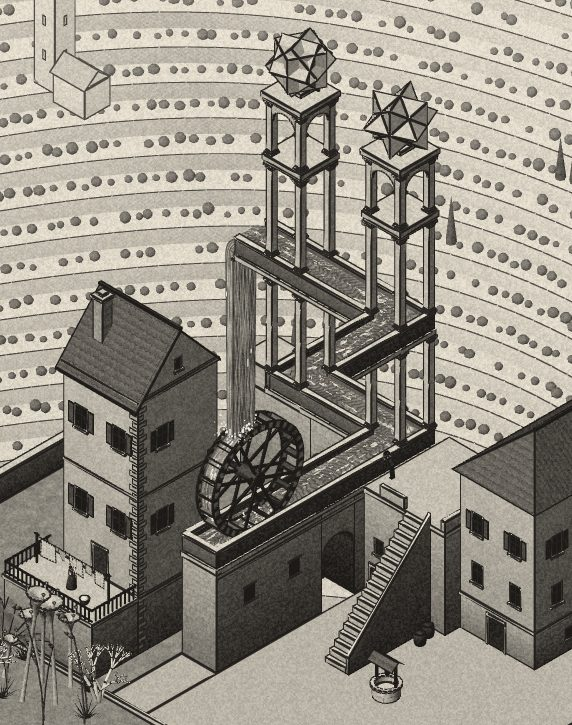

Animated illustrations of the tricks behind impossible drawings and optical illusions: the ones M. C. Escher used, and the ones that came after.

Start hereEscher’s perpetual-motion aqueduct, rebuilt as a real 3D scene seen from the one angle that closes the loop. Water falls, turns the wheel, runs gently downhill, and arrives back at the top of the fall. Press “Reveal the trick” to see what is really there.
Open the Waterfall